academy |> select(구분, 점수) |>
slice(c(1:3, 11:13))
# A tibble: 6 × 2
구분 점수
<chr> <dbl>
1 전 65
2 전 90
3 전 62
4 후 76
5 후 98
6 후 67기초통계 분석
자료 구조로 검정을 고르고 계산을 다른 경로와 대조하기
구본초
충남대학교 정보통계학과
2026-10-17
이 수업에서 다루는 것
검정 코드는 오류 없이 끝나도 자료 구조에 맞지 않을 수 있음: 검정을 고른 근거를 적고 계산을 다른 경로와 대조
| 절 | 내용 | 자료 | |
|---|---|---|---|
| 1 | 검정을 고르기 전에 | 같은 대상을 두 번 쟀는가, 용어, 검정 선택 표 | 가상 점수 표 |
| 2 | 분위수와 Q-Q plot | 분위수의 9가지 방법, Q-Q plot 읽기, 작은 표본과 정규성 검정 | 모의 자료 |
| 3 | 두 집단 비교: t 검정 | 대응 표본, 위약군, 짝은 키로, 세 경로 대조 | 혈압, sleep, 월경통 |
| 4 | 분산분석의 원리 | 다중검정, 모형, 변동분해, F, 회귀모형 | 모의 자료, coagulation |
| 5 | 분산분석 사례와 다중비교 | 잔차로 가정 확인, F 해석, Tukey, Bonferroni | coagulation |
| 6 | 범주형 자료와 상관 | 카이제곱 검정, Fisher 정확검정, 상관 검정 | 타이타닉, 차 맛보기 |
| 7 | 결과를 표로 정리하기 | broom, 여러 변수 검정, 군별 특성표와 다중성 | 월경통 |
| 8 | AI와 함께 | AI 가 고른 검정 검증하기 | sleep-drug.csv |
준비: R 4.4.0 이상(3.3 의 오류 동작), install.packages(c("broom", "faraway", "car")), data/dysmenorrhea.rds 는 강의노트 서두의 주소에서 내려받기
1 검정을 고르기 전에
검정 이름보다 자료 구조를 먼저 보기
같은 대상을 두 번 쟀는지, 변수가 연속형인지 범주형인지로 검정이 정해짐
이 절에서
- 같은 사람을 두 번 쟀는가
- 기초통계 용어 다시 보기
- 자료 구조로 검정 고르기
이 절이 답하는 질문: 이 자료에서 같은 대상이 두 번 측정되었는가?
예측해 보자
두 표 가운데 두 집단에 짝이 있는 표는? 어디를 보면 아는가?
표 1: 학생 10명의 학원 전과 후, 20행
A 표 1
B 표 2
C 이 두 열만으로는 모름
짝: 한 집단의 값이 다른 집단의 같은 대상의 값과 묶이는 것
1.1 같은 학생을 두 번 잰 표
숨겨 둔 번호 열을 세기
c(행 = nrow(academy),
학생 = n_distinct(academy$번호))
행 학생
20 10
c(행 = nrow(two_class),
학생 = n_distinct(two_class$번호))
행 학생
20 20
academy_wide <- academy |>
pivot_wider(names_from = 구분,
values_from = 점수) |>
mutate(차이 = 후 - 전)
academy_wide |>
summarise(across(c(전, 후, 차이), sd))
# A tibble: 1 × 3
전 후 차이
<dbl> <dbl> <dbl>
1 11.7 11.4 4.50- 정답 C: 두 표는 모양이 같음, 누구를 쟀는지 적은 열(키)이 있어야 드러남
- 표 1: 20행에 학생 10명, 한 학생이 두 번씩
- 전과 후의 표준편차 11.7점, 11.4점, 차이의 표준편차 4.5점: 전후 상관 0.92, 학생마다의 수준(개인차)이 차이에서 빠짐
대응 표본: 같은 대상을 두 조건에서 잰 두 표본, 대상마다 차이를 구해 한 표본으로 분석
독립 표본: 서로 다른 대상을 잰 두 표본, 짝이 없음
- 키가 두 번 이상 나오는지
count(),n_distinct()로 세기: 앞 몇 줄로 판단하지 않음
1.2 기초통계 용어 다시 보기
| 용어 | 이 장에서 쓰는 뜻 |
|---|---|
| 귀무가설 H₀ | 검정의 출발점, 예: μ₁ = μ₂ |
| 검정통계량 | 자료가 H₀ 와 얼마나 맞지 않는지 재는 값: t, F, χ² |
| 유의수준 α | H₀ 가 참일 때 기각할 확률의 상한, 이 장은 0.05 |
| p값 | H₀ 가 참이라고 가정할 때, 관측한 것 이상으로 극단적인 통계량이 나올 확률 |
| 1종 오류 | H₀ 가 참인데 기각 |
| 2종 오류, 검정력 | 차이가 있는데 기각하지 못함, 검정력 = 1 − 2종 오류의 확률 |
| 신뢰구간 | 같은 방법으로 거듭 만들면 신뢰수준(이 장은 95%)만큼이 참값을 덮는 구간 |
| 효과 크기 | 차이나 관계의 크기(원래 단위, 표준편차 단위), 표본이 커지면 p값은 작아져도 추정값은 커지지 않음 |
질문: p = 0.03 이면 귀무가설이 참일 확률이 3% 인가?
- 아님: p값은 H₀ 를 가정하고 계산한 확률, 그 가정이 참일 확률이 아님
- 9장: H₀ 가 참인 자료 10,000번, p값은 0과 1 사이에 고르게, p < 0.05 가 약 5%
- 기각하지 못함 ≠ 차이가 없음: 표본이 작으면 검정력이 낮음(2.6 에서 수치로)
- 시뮬레이션으로 확인한 곳: 9장의 1종 오류, 검정력, 신뢰구간의 의미
1.3 자료 구조로 검정 고르기
| 반응 | 설명 변수 | 짝 | 검정 | R 함수 | 절 |
|---|---|---|---|---|---|
| 연속 | 없음(기준값과 비교) | 해당 없음 | 일표본 t | t.test(x, mu = ) |
3.1 |
| 연속 | 같은 대상, 두 조건 | 대응 | 대응 표본 t | t.test(x, y, paired = TRUE) |
3.1, 3.3 |
| 연속 | 범주 2개, 다른 대상 | 독립 | 독립 이표본 t | t.test(y ~ g) |
3.4 |
| 연속 | 범주 3개 이상, 다른 대상 | 독립 | 일원배치 분산분석, 사후검정 | aov(), TukeyHSD() |
4, 5 |
| 범주 | 범주 | 독립 | 카이제곱, Fisher 정확검정 | chisq.test(), fisher.test() |
6.1, 6.2 |
| 연속 | 연속 | 해당 없음 | 상관계수 검정 | cor.test() |
6.3 |
세 질문에 쓸 검정
- 질문 가, 혈압강하제 두 군의 4개월 뒤 혈압 변화량: 독립 이표본 t, 군 안의 전후 비교가 아님(3.2)
- 질문 나, 타이타닉 객실 등급과 생존 여부: 둘 다 범주, 카이제곱
- 질문 다, 네 먹이의 혈액 응고 시간: 연속 대 범주 4개, 분산분석과 사후검정
이 장의 범위 밖
- 순위 기반 검정:
wilcox.test(),kruskal.test() - 이원배치, 반복측정 분산분석
- 반응이 0과 1 인 회귀: 8장 로지스틱 회귀
2 분포 확인: 분위수와 Q-Q plot
t 검정과 분산분석의 가정: 오차가 정규분포
Q-Q plot 을 직접 만들어 읽고, 작은 표본에서 그림과 검정이 표본마다 얼마나 달라지는지 확인
이 절에서
- 분위수
- 분위수 함수 직접 만들기
- Q-Q plot 직접 그리기
- Q-Q plot 의 네 가지 모양
- 작은 표본의 Q-Q plot 과 lineup
- 정규성 검정의 검정력
- 실제 자료의 Q-Q plot: iris
이 절이 답하는 질문: 자료의 분포가 정규분포와 어디서 다른가?
예측해 보자
1 부터 10 까지 열 개의 수에서 0.25 분위수는?
키 순서로 줄 세우기
- 학생 100명을 키 순서로 한 줄로 세움
- 25번째와 26번째 학생 사이의 키: 하위 25% 의 경계
- 1:10 에서는 3번째 값과 4번째 값 사이 어디?
A 3
B 3.25
C 2.5
두 순서통계량 사이에 떨어진 확률을 어떻게 정하느냐에 따라 값이 다름
2.1 분위수: 계산 방법이 아홉 가지
다른 프로그램, 교재, 손 계산과 분위수가 다르면 먼저 type 이 같은지 확인
- 확률 p 의 분위수: 누적분포함수의 역함수 \(Q(p) = F^{-1}(p)\), 예:
qnorm(0.975)= 1.96 - 표본 분위수: 순서통계량 \(x_{(1)} \le \cdots \le x_{(n)}\) 의 가중평균
- type 1, 2, 3: 계단 함수, 결과가 늘 자료값
- type 4 부터 9: 이웃한 두 순서통계량 사이를 선형 보간
- 정답 B: 기본값 type 7 은 \(h = (n-1)p + 1 = 3.25\) 번째 값
- type 5 는 \(j = \lfloor np + 0.5 \rfloor = 3\), \(\gamma = 0\) 이라 \(x_{(3)} = 3\)
예측해 보자
5% 와 95% 에서 맞은 이전 판 함수: 0.1%, 50%, 99.9% 에서도 맞을까?
이전 판 노트의 my_quantile() 핵심, 116–131줄
A 세 값 모두 같음
B 양 끝 두 값만 다름
C 세 값 모두 다름
확률 0.001 은 가장 작은 위치 p₁ = 0.5/373 ≈ 0.0013 보다 작음
2.2 이전 판 함수는 양 끝에서 틀림
- 정답 C: 0.1% 와 99.9% 자리에 중앙값 근처, 50% 자리는 NA, 이름표도
0.0 %,100.0 % - 빈 벡터에
which.max()는integer(0): idx 가 길이 2, 길이 3 인 gamma 와 곱하며 재활용
한 점에서 맞았다고 모든 입력에서 맞지는 않음: 경계(0, 1, 양 끝 근처)를 넣은 격자로 대조
2.3 Q-Q plot 직접 그리기
- 우리 반 키 순서의 줄 옆에 정규분포라면 이 순번의 키로 만든 줄
- x 축: 이론 분위수
qnorm(pk), y 축: 표본 분위수(정렬한 자료)
set.seed(1234)
weight <- rnorm(500, mean = 65, sd = 20)
z <- drop(scale(weight)) # 표준화
qq_manual <- tibble(
pk = (seq_along(z) - 0.5) / 500,
이론 = qnorm(pk),
표본 = sort(z))
qq_r <- qqnorm(z, plot.it = FALSE)
c(x = all.equal(sort(qq_r$x), qq_manual$이론),
y = all.equal(sort(qq_r$y), qq_manual$표본))
x y
TRUE TRUE 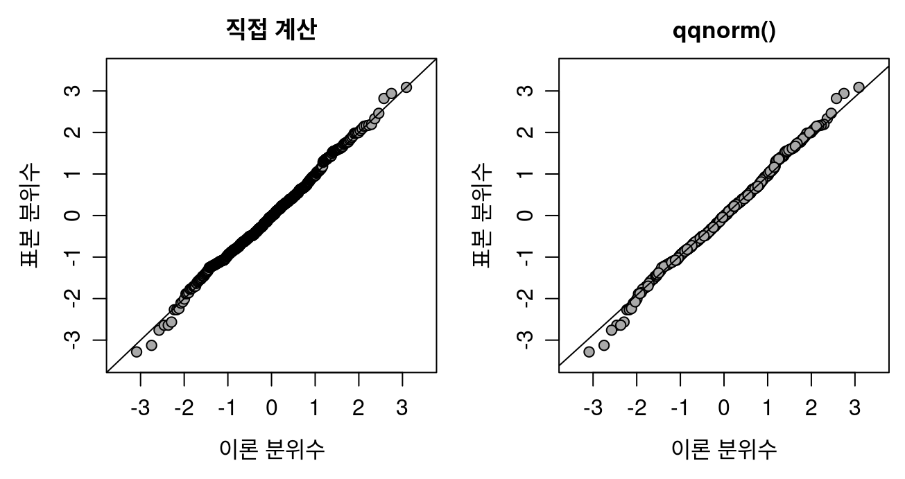
- 정규분포를 따르면 점이 직선 y = x 근처
qqline(): 1사분위수 점과 3사분위수 점을 잇는 직선, 표준화하지 않은 자료에도 씀- 양 끝 몇 점의 벗어남: 정규분포에서 뽑아도 흔함, 값이 드물어 표본마다 차이가 큼
2.3 점이 직선에서 벗어나는 방향

- \(Q_E < Q_T\): 오른쪽 끝 점이 직선 아래, 오른쪽 꼬리가 얇음

- \(Q_E > Q_T\): 오른쪽 끝 점이 직선 위, 오른쪽 꼬리가 두꺼움
파란 곡선: 표본, 빨간 곡선: 정규분포, 녹색: Q-Q plot 의 점. 왼쪽 꼬리는 반대: 왼쪽 끝 점이 직선 아래면 왼쪽 꼬리가 두꺼움
예측해 보자
이름을 가린 네 Q-Q plot: 꼬리가 두꺼운 것과 오른쪽으로 치우친 것은?
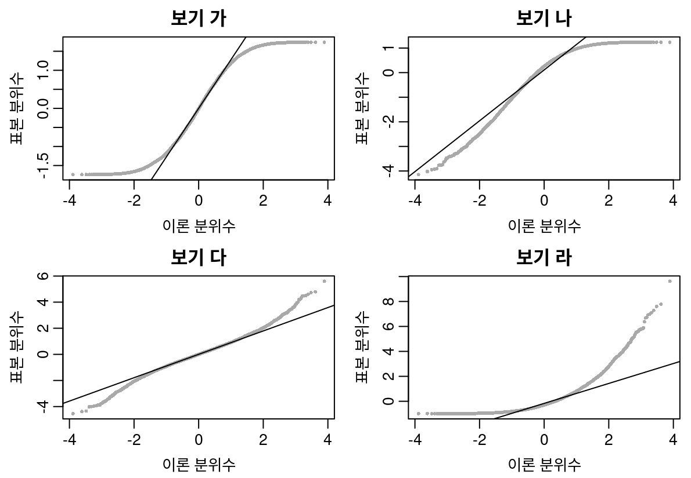
네 분포에서 10,000개씩 뽑아 표준화, 순서는 가림
- 균등분포 U(−2, 2)
- t 분포, 자유도 8
- 지수분포, 비율 3
- 베타분포 Beta(4, 1)
오른쪽 끝이 직선 위: 오른쪽 꼬리가 두꺼움, 왼쪽 끝이 직선 아래: 왼쪽 꼬리가 두꺼움
A 두꺼운 꼬리 가, 치우침 라
B 두꺼운 꼬리 다, 치우침 라
C 두꺼운 꼬리 라, 치우침 나
2.4 네 가지 모양: 밀도로 확인
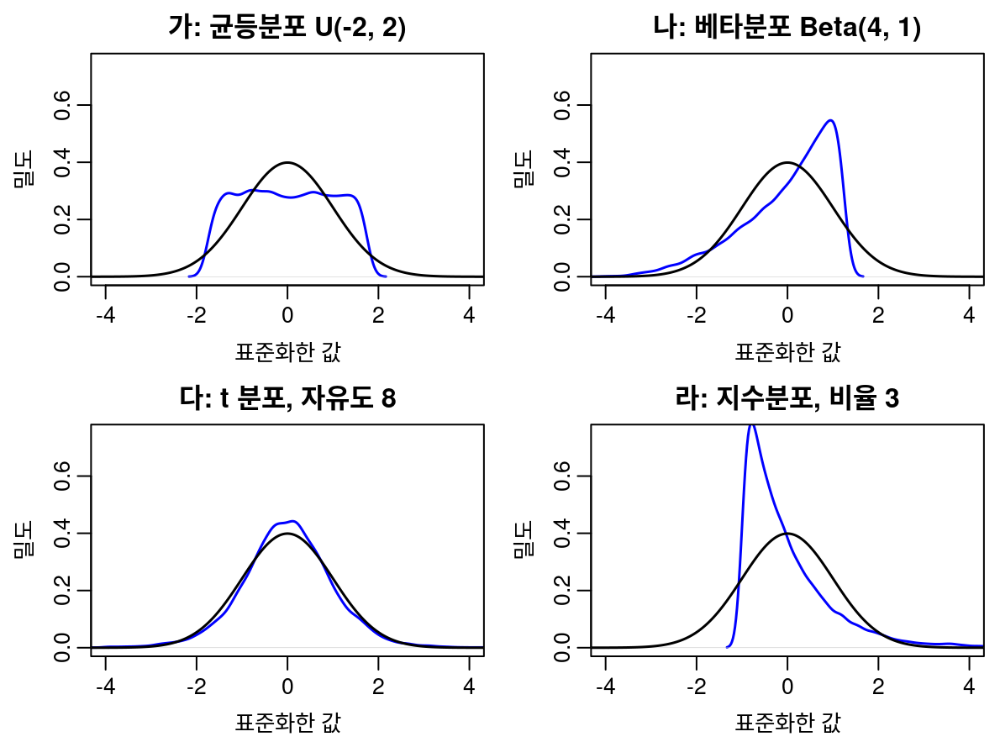
파란 곡선: 자료의 밀도, 검은 곡선: 표준정규분포
예측해 보자
표본 20개짜리 Q-Q plot 아홉 개 가운데 지수분포에서 뽑은 하나는?
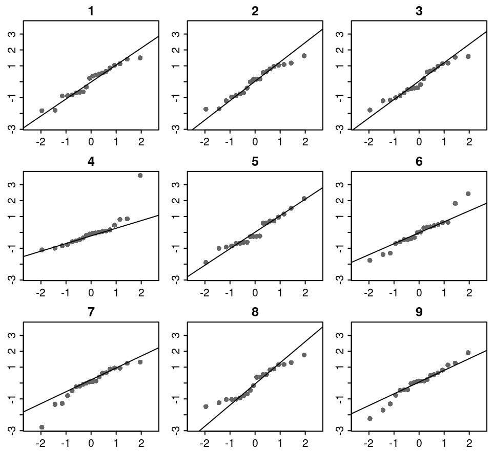
여덟 개는 정규분포, 하나는 지수분포, 모두 표본 20개
- 그림마다 표본을 표준화, 직선은
qqline() - 고른 그림과 이유를 먼저 적기
- lineup: 정규분포에서 뽑은 그림 여럿 사이에 확인할 그림을 섞어, 골라낼 수 있는지 보는 방법
A 2번
B 4번
C 6번
정규분포에서 뽑은 표본 20개도 끝 한두 점은 직선에서 벗어남
2.5–2.6 lineup 의 답과 정규성 검정의 검정력
- 정답 B: 4번, 오른쪽 끝 세 점이 직선 위, 마지막 점의 표준화한 값 3.6
- 6번과 7번도 정규분포에서 뽑았지만 끝 점이 벗어남: 작은 표본의 표본 변동
- Shapiro–Wilk 검정
shapiro.test(): 귀무가설은 ‘자료가 정규분포를 따름’
Shapiro–Wilk 검정의 기각률, 경우마다 4,000번
| 분포 | n | 기각률 | 표준오차 |
|---|---|---|---|
| 지수분포 | 4 | 0.120 | 0.0051 |
| 지수분포 | 6 | 0.213 | 0.0065 |
| 지수분포 | 20 | 0.833 | 0.0059 |
| 지수분포 | 100 | 1.000 | 0.0000 |
| t 분포(자유도 30) | 20 | 0.059 | 0.0037 |
| t 분포(자유도 30) | 5000 | 0.638 | 0.0076 |
| 정규분포 | 5000 | 0.043 | 0.0032 |
정규성은 그림과 표본 크기로 판단: 표본 4개이면 지수분포도 0.12 만 기각, 5,000개이면 t(30) 도 0.638 기각. 검정의 p값만으로 정하지 않음
3 두 집단 비교: t 검정
먼저 두 집단이 대응인지 독립인지 정하기
계산은 직접 계산, t.test(), lm() 세 경로로 대조, 이전 판 노트의 코드 세 개에서 결함 찾기
이 절에서
- 대응 표본: 차이를 한 표본으로
- 위약군과 비교하기
- sleep: 짝은 키로 맞춘다
- 독립 이표본: 합동분산 t 검정과 이전 판 함수
- 회귀모형으로 계산하고 결과 쓰기
- 검정 결과는 리스트다
이 절이 답하는 질문: 두 집단의 차이를 어떤 짝으로 계산하는가?
3.1 대응 표본: 차이를 한 표본으로
- 같은 대상의 처리 전 \(x_i\) 와 후 \(y_i\): 대상마다 차이 \(d_i = y_i - x_i\)
- \(\mu_D = \mu_Y - \mu_X\), \(\sigma_D^2 = \sigma_X^2 + \sigma_Y^2 - 2\rho\,\sigma_X\sigma_Y\)
- 상관 \(\rho\) 가 클수록 \(\sigma_D\) 가 작음: 1.1 에서 개인차가 빠진 이유
- \(t = \bar d / (\hat\sigma_D/\sqrt{n})\), 자유도 \(n - 1\): 차이에 대한 일표본 t 검정
혈압강하제 시험약 군 20명, 투약 전 DBP1 과 1개월 뒤 DBP2
- 이전 판 노트에 주석으로만 있던 확인 코드: 식과 직접 계산이 같음
- 상관이 0 이었다면 \(\sqrt{\sigma_X^2 + \sigma_Y^2}\) = 2.60, 실제는 1.82
예측해 보자
차이를 DBP1 - DBP2 로 바꾸어 t 가 양수 7.49 가 되면, 이전 판 식의 p 는?
이전 판 노트의 코드, 538–563줄 일부
이전 판 자료의 결과
- t = −7.49, 자유도 19
- 이전 판 식의 p = 4.4 × 10⁻⁷
t.test()와 같음: 이전 판 노트는 이것으로 확인
A 4.4 × 10⁻⁷ 그대로
B 1 근처
C 2 근처
pt(t, df) 는 \(P(T \le t)\): t 가 양수이면 이 확률은?
3.1 확률이 1 을 넘은 p값
- 정답 C: 확률이 1 을 넘음, 이전 판 자료는 t 가 음수라 드러나지 않음
- 양측 p값 \(2P(T \le -|t|)\):
2 * pt(-abs(t), df) 2 * (1 - pt(abs(t), df)): p 가 \(10^{-16}\) 보다 작으면 0
세 번째 경로: 두 벡터와 paired = TRUE
Paired t-test
data: treatment$DBP2 and treatment$DBP1
t = -7.4937, df = 19, p-value =
4.365e-07
alternative hypothesis: true mean difference is not equal to 0
95 percent confidence interval:
-3.901884 -2.198116
sample estimates:
mean difference
-3.05 시험약 군 20명의 1개월 뒤 이완기 혈압: 평균 3.05 mmHg 감소(95% 신뢰구간 2.20–3.90 mmHg 감소, t = −7.49, 자유도 19, p < 0.001)
예측해 보자
시험약 군의 혈압이 1개월 뒤 유의하게 떨어졌다. 위약군의 혈압은?
이전 판 노트: 위약군을 걸러 내고 분석
두 군 모두 계산할 코드
- 임상시험 40명: 시험약 A 20명, 위약 B 20명
- 이완기 혈압: 투약 전 DBP1, 투약 뒤 매달 DBP2 부터 DBP5
- 시험약 군: 1개월 뒤 평균 3.05 mmHg 감소, p < 0.001
A 변화 없음
B 시험약 군만큼 감소
C 감소, 시험약 군보다 적게
이것만으로 약효가 있다고 할 수 있는가? 임상시험에 위약군을 두는 이유는?
3.2 위약군도 떨어짐: 변화량을 군끼리 비교
dbp_change <- dbp |>
mutate(d1 = DBP2 - DBP1, d4 = DBP5 - DBP1)
dbp_change |>
reframe(시점 = c("1개월", "4개월"),
평균 = c(mean(d1), mean(d4)),
p = c(t.test(d1)$p.value,
t.test(d4)$p.value),
.by = TRT)
# A tibble: 4 × 4
TRT 시점 평균 p
<chr> <chr> <dbl> <dbl>
1 A 1개월 -3.05 4.36e- 7
2 A 4개월 -15.2 2.65e-15
3 B 1개월 -1.55 1.19e- 3
4 B 4개월 -4.8 3.48e- 8- 정답 C: 위약군도 1개월 뒤 1.55, 4개월 뒤 4.8 mmHg 감소
- 위약 효과, 평균으로의 회귀: 약 성분과 무관한 변화
예측해 보자
이전 판 노트의 sleep 분석: 오류 없이 p = 0.079. 이 분석은 맞는가?
이전 판 노트의 코드, 1401–1412줄
A 맞음: 독립 이표본
B 틀림: 대응 표본
C 자료로는 알 수 없음
ID 열: 환자마다 몇 번 나오는가?
3.3 대응 표본: 쌍체 분석 두 방법
t(table(sleep$ID, sleep$group)) # 행 group, 열 ID
1 2 3 4 5 6 7 8 9 10
1 1 1 1 1 1 1 1 1 1 1
2 1 1 1 1 1 1 1 1 1 1
sleep_wide <- sleep |>
pivot_wider(names_from = group, values_from = extra,
names_prefix = "drug")
# 방법 1: 두 벡터에 paired = TRUE
t_pair <- t.test(sleep_wide$drug2, sleep_wide$drug1,
paired = TRUE)
c(t = unname(t_pair$statistic), p = t_pair$p.value)
t p
4.06212768 0.00283289
# 방법 2: Pair() 로 짝을 묶은 formula
t.test(Pair(drug2, drug1) ~ 1,
data = sleep_wide)$p.value
[1] 0.00283289- 정답 B: 모든 칸이 1, 환자 10명이 두 약을 모두 먹음
긴 표의 formula 에 paired = TRUE
- R 4.4.0 부터 오류: formula 방법에서는
paired를 쓸 수 없음 - 짝은
Pair()나 넓은 표로 명시 - 넓은 표: 환자마다 한 행,
pivot_wider()가 ID 로 짝을 맞춤(12장)
독립(등분산) p = 0.079, 쌍체 p = 0.0028: 결론이 바뀜
3.3 결론이 바뀐 이유: 환자마다 짝 선
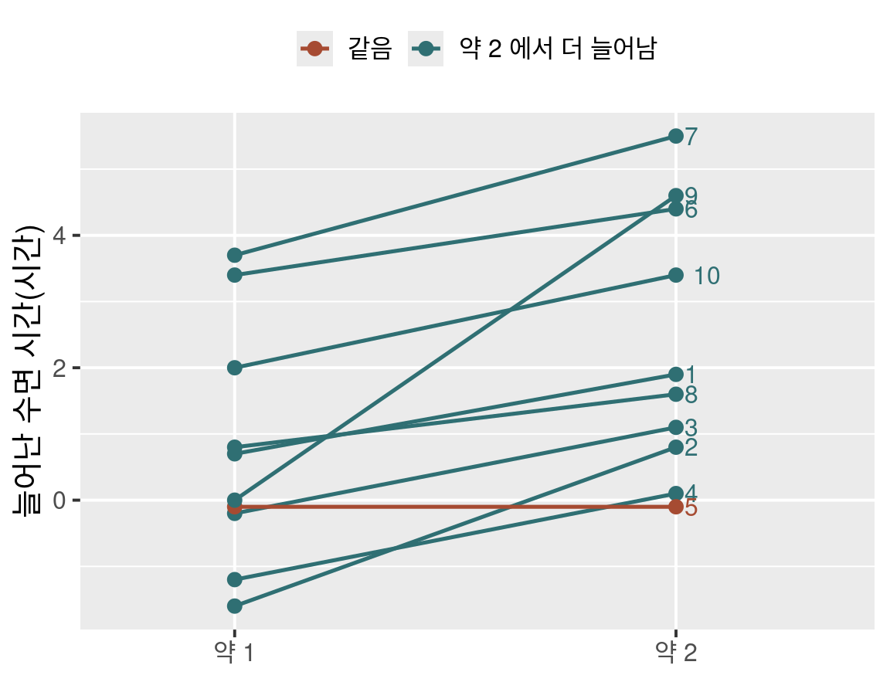
선 하나가 환자 한 명, 오른쪽 숫자는 ID
- 약 1 에서 많이 는 환자가 약 2 에서도 많이 늘어남: 두 약의 상관 0.80
- 10명 가운데 9명은 약 2 에서 더 늘고 1명은 같음
- 독립 분석: 환자 사이의 차이가 오차에 남아 두 약의 차이를 가림
- 쌍체 분석: 환자마다 차이를 구해 그 부분을 뺌(3.1 의 \(\sigma_D\) 식)
모의실험: 개인차 표준편차 2, 약 B 의 효과 1시간, 환자 10명, 4,000번
검정력: 독립 분석 0.046, 쌍체 분석 0.505
3.3 짝은 위치가 아니라 키로
set.seed(1433)
sleep_shuffled <- sleep[sample(nrow(sleep)), ]
# 위치로 짝: 두 벡터의 i 번째끼리
with(sleep_shuffled,
t.test(extra[group == "2"],
extra[group == "1"],
paired = TRUE)$p.value)
[1] 0.0302616
# 키로 짝: pivot_wider() 가 ID 로 맞춤
sleep_shuffled |>
pivot_wider(names_from = group,
values_from = extra,
names_prefix = "drug") |>
with(t.test(drug2, drug1,
paired = TRUE)$p.value)
[1] 0.00283289- 행 순서만 섞은 sleep
- 위치로 짝: 다른 환자끼리 짝이 지어져 p값이 달라짐, 오류도 경고도 없음
- 넓힌 표: ID 로 짝을 맞춰 행 순서와 무관, 12장의 키
- 8절의 연습 파일이 이 상황
계산의 검증 ≠ 설계의 검증: 이전 판 코드는 t.test() 와 일치(계산은 맞음), 틀린 것은 검정의 선택. 설계는 키를 count() 로 세고 1.3 의 표와 대조
예측해 보자
이전 판 indep_t_test() 와 t.test(): 결과가 다른 원소는?
이전 판 노트의 코드, 643–672줄 일부
mean_diff <- mvec[1] - mvec[2] # 평균 차이
pool_var <- sum((nvec - 1) * vvec)/(sum(nvec) - 2) # 합동분산
std_err <- sqrt(sum(pool_var * (1/nvec)))
t_stat <- mean_diff/std_err
pvalue <- 2*(1 - pt(abs(t_stat), df = sum(nvec) - 2))
ucl <- mean_diff + qt(1 - (1 - conf.level)/2, df = degf) * std_err
lcl <- mean_diff - qt(1 - (1 - conf.level)/2, df = degf) * std_err
out <- list(statistic = t_stat, parameter = degf,
p.value = pvalue, conf.int = c(ucl, lcl),
estimate = mean_diff, stderr = std_err)월경통 환자 23명, 대조군 24명의 맥 깊이 pdi(mm)
- 합동분산 \(s_p\) 로 만든 검정통계량
\[t = \frac{\bar y_1 - \bar y_2}{s_p\sqrt{1/n_1 + 1/n_2}}\]
- 같은 자료의
lm(pdi ~ pidyn)기울기는 평균 차이와 부호가 같은가?
A statistic
B p.value
C conf.int
두 수가 모두 출력되면 눈으로 비교할 때 놓치기 쉬움
3.4–3.5 세 경로 대조: conf.int 와 lm() 의 부호
res_old <- indep_t_test(y = dysmenorrhea$pdi,
group = dysmenorrhea$pidyn)
same_as_ttest(res_old) # t.test() 와 원소마다
statistic parameter p.value conf.int
TRUE TRUE TRUE FALSE
estimate stderr
TRUE TRUE
res_old$conf.int
Control Control
1.9523625 0.2797803
as.vector(res_tt$conf.int)
[1] 0.2797803 1.9523625
same_as_ttest(indep_t_test2(dysmenorrhea$pdi,
dysmenorrhea$pidyn))
statistic parameter p.value conf.int
TRUE TRUE TRUE TRUE
estimate stderr
TRUE TRUE - 정답 C: 이전 판은
c(ucl, lcl), 상한을 먼저 - 고친 함수:
c(lcl, ucl),pt(-abs(t)), 기본 인수y = y제거
t.test(): 첫 수준 − 둘째 수준(Control − Dysmenorrhea) = 1.116lm()기울기: 둘째 수준 − 기준 수준 = -1.116, 크기는 같고 부호가 반대, p 는 같음- 설계행렬: 절편 열과 0/1 열, 8장 정규방정식의 \(\mathbf{X}\)
3.5–3.6 해석 문장, 결과는 리스트
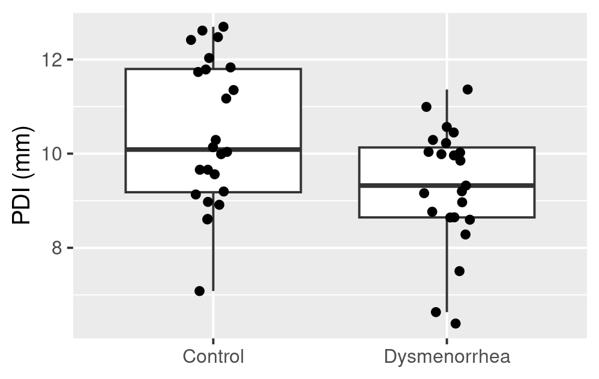
월경통 군의 PDI 평균이 대조군보다 1.12 mm 작음(95% 신뢰구간 0.28–1.95, t = 2.69, 자유도 45, p = 0.010)
t.test() 의 결과: 클래스 htest 인 이름 붙은 리스트
| 원소 | 뜻 |
|---|---|
statistic, parameter |
검정통계량, 자유도 |
conf.int |
길이 2 수치 벡터(하한, 상한), 속성 conf.level |
estimate |
독립 이표본은 집단 평균 두 개, 대응은 하나 |
stderr |
평균(차이)의 표준오차 |
- 이전 판의 “수치들이 저장되지는 않음”: 틀림, 모두 원소로 저장
4 셋 이상 집단: 분산분석의 원리
집단이 셋 이상: 두 집단씩 t 검정을 되풀이하지 않고 분산분석 한 번
제곱합과 F 를 직접 계산해 anova() 와 대조
이 절에서
- t 검정을 여러 번 하면
- 모형과 처리 효과
- 변동분해
- F 통계량과 분산분석 표
- 시뮬레이션으로 보는 F
- 분산분석도 회귀모형이다
이 절이 답하는 질문: 왜 t 검정을 여러 번 하지 않는가?
예측해 보자
모평균이 같은 세 집단(각 20명)에서 쌍마다 t 검정 세 번: 하나 이상 ’유의’일 확률은?
20면 주사위: 1 이 나올 확률 0.05
- 세 번 던져 한 번 이상 1: \(1 - 0.95^3 = 0.143\)
- 세 집단의 쌍: \({}_3\mathrm{C}_2 = 3\)
이전 판 노트의 서술, 718–726줄
총 3번(₃C₂ = 6)의 t 검정 실시 … 귀무가설을 지지할 확률은 95 %임 … 1 - 0.8754 = 0.1426
A 0.05
B 0.05 와 0.143 사이
C 0.143
주사위 세 번은 서로 독립: 세 쌍의 t 검정도 서로 독립인가?
4.1 쌍별 검정은 0.12, F 검정은 0.05
set.seed(1441)
fam <- replicate(5000, {
y <- rnorm(60)
g <- factor(rep(c("A", "B", "C"), each = 20))
p_pair <- c(t.test(y[g == "A"], y[g == "B"])$p.value,
t.test(y[g == "A"], y[g == "C"])$p.value,
t.test(y[g == "B"], y[g == "C"])$p.value)
c(쌍별 = any(p_pair < 0.05),
F검정 = anova(lm(y ~ g))$"Pr(>F)"[1] < 0.05)
})
fam_rate <- rowMeans(fam)
rbind(기각률 = fam_rate,
표준오차 = sqrt(fam_rate * (1 - fam_rate) / 5000))
쌍별 F검정
기각률 0.117400000 0.045400000
표준오차 0.004552301 0.002944107- 정답 B: 쌍별 세 번 가운데 하나 이상 0.117, 0.05 보다 크고 0.143 보다 작음
- 세 검정은 집단을 공유: A 와 B, A 와 C 의 비교가 모두 A 를 씀, 독립이 아님
- 같은 자료의 F 검정: 0.045, 유의수준 0.05 근처
’모든 모평균이 같다’는 F 검정 한 번, 어느 쌍이 다른지는 1종 오류를 조절하는 사후검정(5.4)
4.2–4.3 처리 효과와 편차의 분해
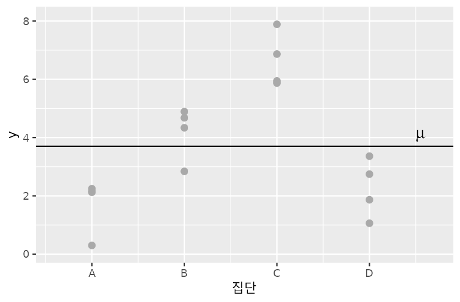
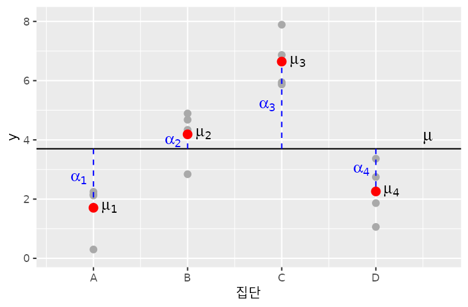
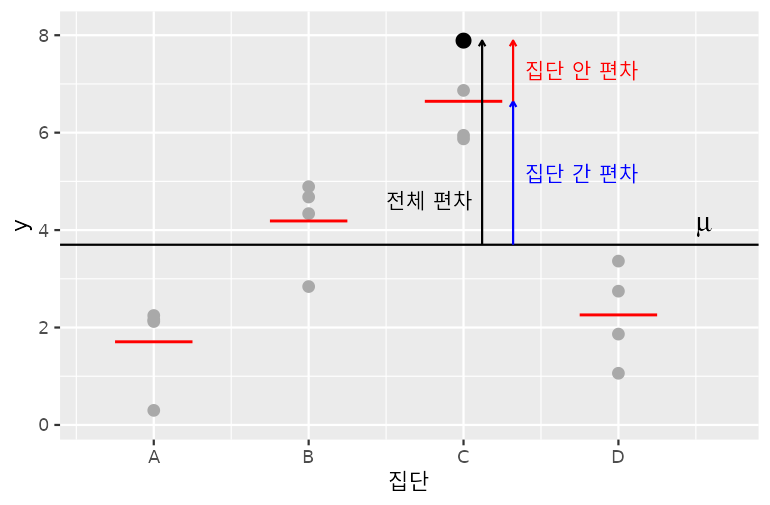
- 모형 \(y_{ij} = \mu + \alpha_i + \epsilon_{ij}\), \(\epsilon_{ij} \sim N(0, \sigma^2)\)
- 가설 \(H_0: \mu_1 = \cdots = \mu_g\), 곧 모든 \(\alpha_i = 0\)
- 처리 효과 \(\alpha_i = \mu_i - \mu\): \(\alpha_3\) = 2.94 로 양수
- 제약 \(\sum_i n_i\alpha_i = 0\): 균형 설계에서 \(\sum_i \alpha_i = 0\)
- 전체 편차 = 집단 간 편차 + 집단 안 편차
- \(y_{ij} - \bar y_{..} = (\bar y_{i.} - \bar y_{..}) + (y_{ij} - \bar y_{i.})\)
예측해 보자
이전 판 노트의 집단 안 제곱합 식: coagulation 의 anova() 와 같을까?
정의: 집단 i 의 표본분산과 집단 안 제곱합
\[s_i^2 = \frac{1}{n_i - 1}\sum_{j}(y_{ij} - \bar y_{i.})^2\]
\[SSW = \sum_{i}\sum_{j}(y_{ij} - \bar y_{i.})^2\]
A 같음
B 이전 판 식이 큼
C 이전 판 식이 작음
집단마다의 표본분산은 편차제곱합을 무엇으로 나누어 정의했는가?
4.3 식을 수치로 대조
coag_stat <- coagulation |>
summarise(n_i = n(), 평균 = mean(coag),
분산 = var(coag), .by = diet)
grand <- mean(coagulation$coag)
with(coag_stat, c(
SST = sum((coagulation$coag - grand)^2),
SSB = sum(n_i * (평균 - grand)^2),
SSW_바른식 = sum((n_i - 1) * 분산),
SSW_이전판 = sum(n_i * 분산)))
SST SSB SSW_바른식 SSW_이전판
340.0000 228.0000 112.0000 132.9905
anova(lm(coag ~ diet,
data = coagulation))$"Sum Sq"
[1] 228 112- 정답 B: 이전 판 식 132.99, 바른 식 112 =
anova()의 Residuals - 바른 식: 340 = 228 + 112, 이전 판 식이면 228 + 132.99 = 360.99
- \(s_i^2\) 을 \(n_i - 1\) 로 나누어 정의: 되돌릴 때 \(n_i - 1\) 을 곱함
\[SSW = \sum_{i=1}^{g}(n_i - 1)s_i^2\]
이전 판의 시뮬레이션 코드는 정의대로 계산해 출력이 맞음: 식의 오류는 수치로 대조해야 드러남
4.4 F 통계량과 분산분석 표
| 요인 | 제곱합 | 자유도 | 평균제곱 | F |
|---|---|---|---|---|
| 집단 간 | SSB | g − 1 | MSB = SSB/(g − 1) | MSB/MSW |
| 집단 안 | SSW | N − g | MSW = SSW/(N − g) | |
| 전체 | SST | N − 1 |
- MSW: H₀ 가 참이든 아니든 σ² 의 추정값
- H₀ 가 참이면 MSB 도 σ² 추정: F 는 1 근처, 자유도 (g − 1, N − g) 인 F 분포
- 집단 평균이 다르면 MSB 가 커져 F 가 커짐
- p값:
pf(F, g - 1, N - g, lower.tail = FALSE)
질문: MSB 는 집단 평균 세 개의 분산인가?
- 균형 설계: MSB = n × (집단 평균들의 분산), 표본평균의 분산이 σ²/n 이라 n 을 곱해야 σ² 추정
- 이전 판의 “MSB = 집단 평균들의 분산”: n 이 빠짐
예측해 보자
모평균 (−1, 0, 1) 은 그대로, 표준편차만 1 에서 3 으로: F 와 MSW 는?
이전 판 plot_anova_sim() 을 생성, 계산, 그리기로 나눈 함수
집단마다 20개, 같은 시드
- 경우 3-a, σ = 1: F = 24.7, MSW = 0.85
- 경우 3-b, σ = 3: F 는? MSW 는?
- 이전 판 노트의 경우 3-b 캡션: “σ² = 3”
A F 커짐, MSW 3 근처
B F 작아짐, MSW 3 근처
C F 작아짐, MSW 9 근처
MSW 는 무엇의 추정값인가?
4.5 집단 안의 변동이 커지면 F 가 작아짐
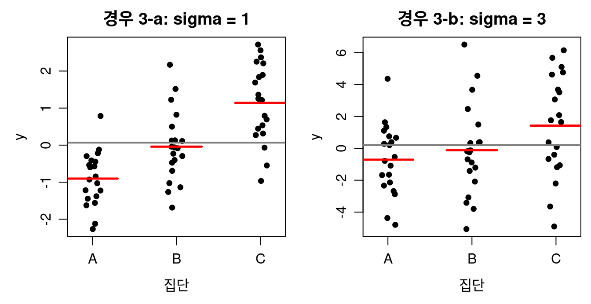
빨간 선: 집단 평균, 회색 선: 전체 평균
- 정답 C: F 24.7 → 3.17, p = 0.0495, 모평균의 차이는 같고 분모 MSW 가 약 9배
| 경우 | 모평균 | σ | F | MSW |
|---|---|---|---|---|
| 1 | 0, 0, 0 | 1 | 0.21 | 0.85 |
| 2 | -5, 0, 5 | 1 | 592.59 | 0.85 |
| 3-a | -1, 0, 1 | 1 | 24.75 | 0.85 |
| 3-b | -1, 0, 1 | 3 | 3.17 | 7.66 |
- MSW 는 σ² 의 추정값: 3-b 에서 9 근처인 7.66
- 이전 판 캡션 σ² = 3 은 틀림: 코드는
sd = 3, σ² = 9 - 계산 함수와
anova()의 제곱합 대조: TRUE
4.6 분산분석도 회귀모형이다
이전 판 노트의 6×4 설계행렬, 442–473줄: β 넷을 하나로 정할 수 있는가?
\[\mathbf{X} = \begin{bmatrix} 1 & 1 & 0 & 0 \\ 1 & 1 & 0 & 0 \\ 1 & 0 & 1 & 0 \\ 1 & 0 & 1 & 0 \\ 1 & 0 & 0 & 1 \\ 1 & 0 & 0 & 1 \end{bmatrix}\]
- 둘째, 셋째, 넷째 열의 합 = 첫째 열: rank 3, 계수를 하나로 정할 수 없음
R 의 lm(): 기준 수준 + 가변수 g − 1 개
- 절편 61 = 기준 수준 A 의 평균,
dietB5 = B − A,dietC7 = C − A,dietD0 = D − A - 8장 정규방정식이 이런 \(\mathbf{X}\) 로 계수를 구함
t 검정(집단 2개)과 분산분석(3개 이상): 설명 변수가 범주형인 선형모형 하나의 틀
5 분산분석 사례와 다중비교
자료 하나로 탐색, 가정 확인, F 검정, 사후검정, 해석 문장까지 차례로
출력마다 그 수치가 뜻하는 바를 문장으로
이 절에서
- coagulation 자료
- 가정 확인: 잔차로 본다
- F 검정 결과 읽기
- Tukey 사후검정
- Bonferroni 와 방법별 비교
이 절이 답하는 질문: 어느 먹이끼리 다른가?
예측해 보자
상자그림만 보고: 평균 응고 시간이 다르다고 생각되는 먹이 쌍은?
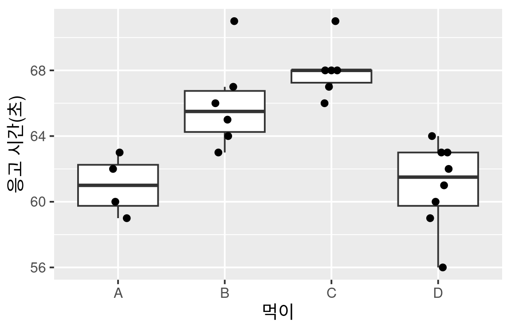
A 여섯 쌍 모두
B A 와 D, B 와 C 는 비슷, 두 묶음 사이만
C D 와 나머지 셋
5.2 가정 확인: 잔차로 본다
이전 판 노트: 먹이마다 Shapiro–Wilk 검정
- 모두 p > 0.05: 정규성을 확인했다고 할 수 없음, 표본 4개이면 지수분포도 0.12 만 기각(2.6)
- 오차는 먹이와 상관없이 같은 분포: 잔차 \(e_{ij} = y_{ij} - \bar y_{i.}\) 24개를 한데
- 응고 시간은 정수 초, 잔차도 정수: 같은 값이 반복되어 점이 가로 계단
- 계단은 기록 단위 때문, 꼬리나 치우침이 아님
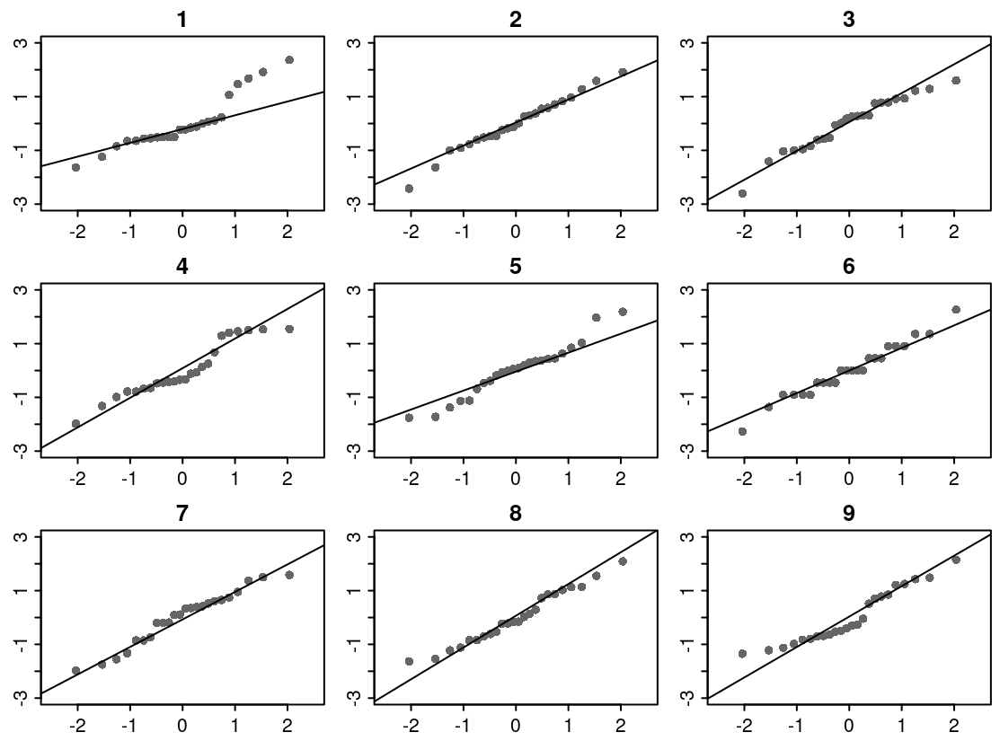
- 잔차는 6번: 계단 때문에 골라낼 수 있음, 계단의 양 끝은 직선을 따름, Shapiro p = 0.863 는 보조
5.2–5.3 등분산 확인과 F 검정 결과 읽기
- 표준편차의 비 1.7: 2 를 넘지 않음(경험 규칙)
car::leveneTest()의 기본값은center = median(Brown–Forsythe 변형), 원래 Levene 은center = mean- 등분산이 의심되면 Welch 의 분산분석
oneway.test()
네 먹이의 평균 응고 시간(61, 66, 68, 61초)이 모두 같다는 가설을 기각(F = 13.57, 자유도 3과 20, p < 0.001)
- 어느 먹이가 다른지는 말하지 않음
- \(\eta^2 = SSB/SST\) = 228/340 = 0.67: 응고 시간 변동의 67% 가 먹이의 차이
summary(aov())와anova(lm()): 같은 표
5.4 Tukey 사후검정
- 여섯 쌍의 신뢰구간이 모두 함께 참값을 덮을 확률: 균형 설계에서 95%, 불균형이면 Tukey–Kramer 구간으로 95% 이상
- 0 을 포함하지 않는 쌍: B−A, C−A, D−B, D−C
- 0 을 포함하는 쌍: D−A(0초), C−B(2초)
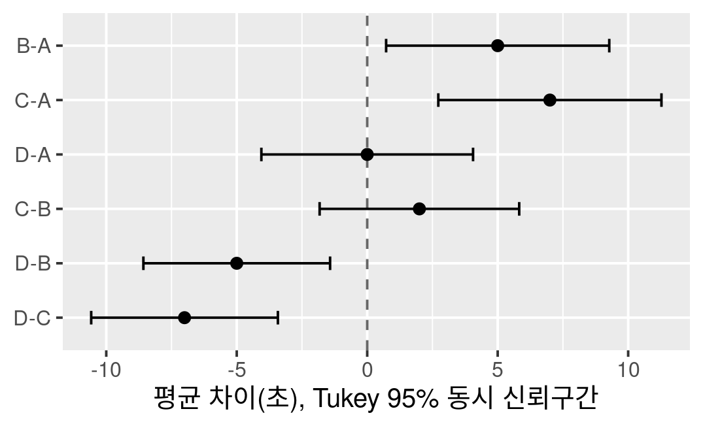
정답 B: A 와 D, B 와 C 가 각각 비슷, B 와 C 가 A 와 D 보다 5–7초 김
- Tukey HSD 는 F 검정의 결과와 상관없이 1종 오류를 조절, F 를 먼저 통과해야 하는 방법은 Fisher 의 LSD
예측해 보자
이전 판 노트가 적은 보수적인 순서: 임계값을 계산하면 맞는가?
이전 판 노트의 서술, 1166–1170줄
- Sheffe: 절차 간단, 표본 크기가 달라도 적용 가능
- Tukey(honestly significant difference): 매우 보수적
- Duncan: 다른 다중비교 방법에 비해 덜 보수적임
- Bonferroni > Tukey > Duncan > Sheffe
A 맞음
B Tukey 가 가장 보수적
C Scheffé 가 가장 보수적
임계값이 클수록 ’유의’로 판정하기 어려움: 보수적
5.5 임계값과 가족오류율
귀무가설 자료 5,000번, 네 집단 각 6개
set.seed(1455)
max_t <- replicate(5000, {
y <- rnorm(24) # H0 가 참
g <- factor(rep(LETTERS[1:4], each = 6))
m <- tapply(y, g, mean)
msw <- sum((y - m[g])^2) / 20 # 합동분산
max(abs(outer(m, m, "-"))) / sqrt(msw * 2 / 6)
})
fwer <- sapply(crit, \(cv) mean(max_t > cv))
round(fwer, 3) # 한 번 이상 '유의'인 비율
Scheffé Bonferroni Tukey 보정없음
0.033 0.040 0.051 0.193 | 방법 | 임계값 | 가족오류율 |
|---|---|---|
| Scheffé | 3.049 | 0.033 |
| Bonferroni | 2.927 | 0.040 |
| Tukey | 2.799 | 0.051 |
| 보정 없음(LSD) | 2.086 | 0.193 |
- 정답 C: 모든 쌍 비교에서 Scheffé 가 가장 보수적, 이전 판 순서는 틀림, 표기도 Scheffé
- 보정 없음: 0.05 의 약 네 배
- Tukey: 균형 설계에서 0.05, ’매우 보수적’이 아님
모든 쌍을 비교할 때는 Tukey, 미리 정한 몇 쌍만 비교할 때는 Bonferroni. Duncan 은 R 기본 함수에 없어 다루지 않음
6 범주형 자료와 상관
1.3 표의 마지막 두 행: 범주형 변수 두 개, 연속형 변수 두 개의 관계
검정마다 무엇을 비교하는지(기대도수, 직선 관계)를 수치로 확인
이 절에서
- 분할표와 카이제곱 검정
- 칸이 작을 때: Fisher 정확검정
- 상관계수와 검정
이 절이 답하는 질문: 범주와 범주, 연속과 연속의 관계는 어떻게 검정하는가?
예측해 보자
객실 등급과 생존이 무관하다면 3등석 승객 709명 가운데 생존자는?
타이타닉호 승객 1,309명, 12장의 파일
A 약 181명
B 약 271명
C 약 355명
무관하다면 어느 등급이든 생존 비율이 전체 비율 500/1,309 와 같음
6.1 기대도수와 카이제곱 검정
chi_class <- chisq.test(tab_class)
c(X2 = unname(chi_class$statistic),
자유도 = unname(chi_class$parameter),
p = chi_class$p.value)
X2 자유도 p
1.278592e+02 2.000000e+00 1.720826e-28
round(chi_class$expected, 1) # 기대도수
생존
등급 0 1
1 199.6 123.4
2 171.2 105.8
3 438.2 270.8
round(chi_class$stdres, 2) # 표준화 잔차
생존
등급 0 1
1 -10.11 10.11
2 -1.84 1.84
3 10.25 -10.25- 정답 B: 기대도수 = (행 합) × (열 합) / (총합) = 709 × 500 / 1,309 = 270.8, 관측 181
- \(X^2 = \sum (O - E)^2 / E\), 자유도 (3 − 1)(2 − 1) = 2
- 표준화 잔차의 절댓값이 2 를 넘는 칸: 통계량을 키운 칸, 1등석 생존 10.11, 3등석 생존 −10.25
객실 등급과 생존 여부가 독립이라는 가설을 기각(X² = 127.86, 자유도 2, p < 0.001): 1등석 생존 비율이 3등석의 2.4배
- 2×2 표: 기본으로 Yates 연속성 수정, 성별 × 생존 363.6, 수정하지 않으면 365.9
예측해 보자
맛을 구별하지 못하고 아무렇게나 골라도 8잔 가운데 6잔 이상 맞힐 확률은?
Fisher(1935) 의 차 맛보기, fisher.test 도움말의 예제
A 약 0.01
B 약 0.05
C 약 0.25
8잔에서 4잔을 고르는 방법 ₈C₄ = 70 가지 가운데 3잔 이상 맞는 방법은?
6.2 칸이 작을 때: Fisher 정확검정
- 기대도수가 모두 2:
chisq.test()가 경고 “Chi-squared approximation may be incorrect” - 카이제곱 분포는 기대도수가 충분히 클 때의 근사
- 정답 C: 3잔 이상 맞는 방법 16 + 1 = 17 가지, 17/70 = 0.243
- Fisher 정확검정: 근사 없이 초기하분포로 확률을 직접 계산,
dhyper()와 같음
8잔 중 6잔은 우연으로도 네 번에 한 번꼴: 맛을 구별한다는 근거가 되지 못함(단측 p = 0.243)
- 기대도수 5 미만 칸이 20% 를 넘거나 1 미만 칸이 있으면 카이제곱 대신 Fisher 정확검정
chisq.test()의 경고: 5 미만 칸이 하나만 있어도
예측해 보자
연비와 무게의 상관 검정 t 와 회귀 기울기 t 는 같은가?
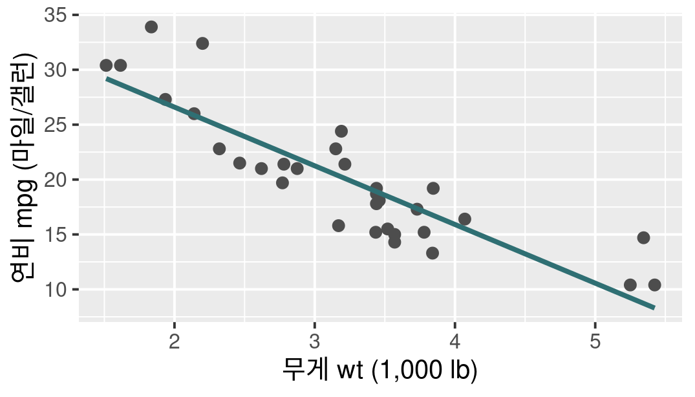
A 같음
B 크기는 같고 부호가 반대
C 다름
단순회귀에서 기울기 β₁ 이 0 이면 모상관계수 ρ 는?
6.3 상관 검정과 회귀 기울기 검정은 같은 t
ct <- cor.test(mtcars$mpg, mtcars$wt)
round(c(r = unname(ct$estimate),
t = unname(ct$statistic)), 3)
r t
-0.868 -9.559
round(as.vector(ct$conf.int), 3) # 95% 신뢰구간
[1] -0.934 -0.744
fit_mt <- lm(mpg ~ wt, data = mtcars)
coef(summary(fit_mt))["wt", "t value"]
[1] -9.559044
cor(mtcars$mpg, mtcars$wt, method = "spearman")
[1] -0.886422
sapply(1:4, \(i) cor(anscombe[[paste0("x", i)]],
anscombe[[paste0("y", i)]]))
[1] 0.8164205 0.8162365 0.8162867 0.8165214- 정답 A: 두 t 가 같음, ‘모상관계수 0’ 과 ‘기울기 0’ 은 같은 가설
- r = −0.868, p = 1.3 × 10⁻¹⁰: 무거운 차일수록 연비가 낮음
상관계수는 직선 관계의 세기만 요약, 상관 검정도 선형모형의 틀
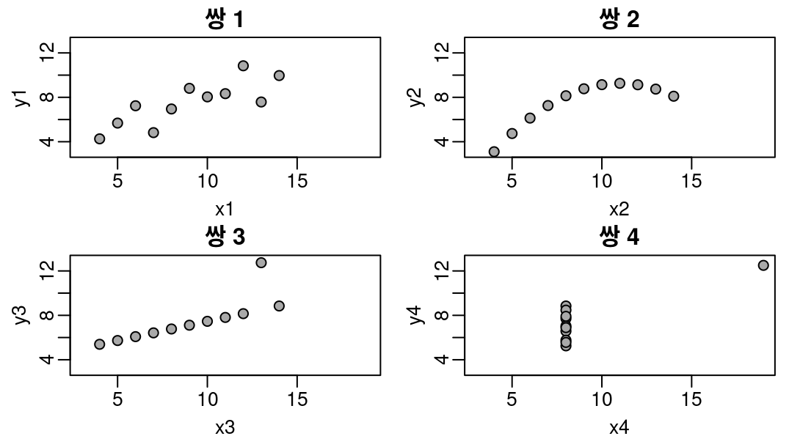
- 13장
anscombe: 모양이 다른 네 쌍의 r 이 모두 0.816, 계산 전에 산점도 - Spearman 순위상관 −0.886: 한 방향으로 늘거나 주는 관계, 이상점이 있는 자료
7 결과를 표로 정리하기
검정 결과를 같은 모양의 데이터 프레임으로 꺼내 여러 변수를 한 표에
이름표는 위치가 아니라 키로, 여러 검정을 한 표에 둘 때의 다중성
이 절에서
- broom: 결과를 데이터 프레임으로
- 여러 변수를 한 번에 검정하기
- 군별 특성표와 다중성
이 절이 답하는 질문: 여러 검정 결과를 한 표에 둘 때 무엇을 확인하는가?
7.1 broom: 결과를 데이터 프레임으로
질문: tidy() 와 glance() 의 결과는 몇 행 몇 열?
dim(tidy(res_tt)) # 검정 하나
[1] 1 10
dim(tidy(fit_coag)) # 계수 넷
[1] 4 5
dim(glance(fit_coag)) # 모형 하나
[1] 1 12
dim(augment(fit_coag)) # 관측 24개
[1] 24 8
tidy(res_tt) |>
select(estimate, statistic, p.value, conf.low)
# A tibble: 1 × 4
estimate statistic p.value conf.low
<dbl> <dbl> <dbl> <dbl>
1 1.12 2.69 0.0100 0.280
all.equal(augment(fit_coag)$.resid,
unname(resid(fit_coag)))
[1] TRUE| 함수 | 한 행 | 예 |
|---|---|---|
tidy() |
검정, 계수, 비교 하나 | tidy(tukey_coag) 6행 |
glance() |
모형 하나 | R², F, AIC |
augment() |
관측 하나 | .fitted, .resid 를 붙임 |
- 정해진 열 이름:
estimate,statistic,p.value,conf.low,conf.high, 여러 결과를 행으로 쌓기 - 이전 판: 원소를 하나씩 꺼냄, 검정마다 원소 이름이 달라 코드도 바뀜
glance(fit_coag)의 \(R^2\) 0.671 = 5.3 의 \(\eta^2\)library(broom)하나, tidymodels 전체를 붙이지 않음
예측해 보자
p값 순으로 정렬한 결과표에 이름표를 위치로 붙이면?
이전 판 방식: 설명 벡터의 위치로
- 이전 판 노트:
name = dat_lab[3:12] - 결과표: 월경통 자료 9개 변수마다 Welch t 검정 한 행
A 오류
B 경고와 함께 어긋남
C 오류, 경고 없이 어긋남
mutate() 는 길이 9 인 벡터를 받으면 그대로 붙임: 어느 행이 어느 설명인지는?
7.2 여러 변수를 한 번에 검정하기
dys_long <- dysmenorrhea |>
select(-mmpscr) |>
mutate(across(age:pdi, as.vector),
pidyn = factor(as.vector(pidyn))) |>
pivot_longer(age:pdi, names_to = "variable",
values_to = "value")
dys_tests <- dys_long |>
reframe(tidy(t.test(value ~ pidyn)), .by = variable)
dys_tests |> arrange(p.value) |>
mutate(name_위치 = var_labels$name[c(3:10, 12)]) |>
select(variable, name_위치) |> head(3)
# A tibble: 3 × 2
variable name_위치
<chr> <chr>
1 pdi Age [yr]
2 sysbp Height [cm]
3 height Weight [kg]- labelled 열은 그대로
pivot_longer()하면 오류:as.vector()로 속성 떼기 mmpscr: 군을 정하는 데 쓰였을 수 있어 제외
- 정답 C: pdi 행에
Age [yr], 오류도 경고도 없음
이름표는 변수 이름을 키로 결합
- 행 순서와 상관없이 맞는 이름: 3.3 에서 짝을 ID 로 맞춘 것과 같은 원리
reframe(): 집단마다 여러 열의 결과(12장)
7.3 군별 특성표와 다중성
| 변수 | Control | Dysmenorrhea | p | p (Holm) |
|---|---|---|---|---|
| Age [yr] | 22.5 ± 1.7 | 23.0 ± 2.5 | 0.43 | 1.00 |
| Height [cm] | 160.6 ± 4.4 | 162.3 ± 4.0 | 0.16 | 1.00 |
| Weight [kg] | 52.9 ± 6.1 | 54.9 ± 4.9 | 0.22 | 1.00 |
| BMI [kg/m²] | 20.5 ± 2.3 | 20.8 ± 1.7 | 0.59 | 1.00 |
| Systolic BP [mmHg] | 111.2 ± 10.0 | 106.5 ± 9.3 | 0.10 | 0.82 |
| Diastolic BP [mmHg] | 73.8 ± 7.8 | 72.5 ± 7.1 | 0.56 | 1.00 |
| Pulse [bpm] | 74.2 ± 19.5 | 72.3 ± 8.2 | 0.66 | 1.00 |
| Body temperature [℃] | 37.0 ± 0.3 | 36.9 ± 0.3 | 0.40 | 1.00 |
| PDI [mm] | 10.4 ± 1.6 | 9.3 ± 1.3 | 0.0098 | 0.088 |
보정 전 p 와 Holm p 를 함께 싣기: pdi 를 미리 정했다면 보정 전 p, 9개를 둘러본 뒤 골랐다면 Holm p. 서식(sprintf())은 표를 출력하기 직전에만
8 AI와 함께: AI 가 고른 검정 검증하기
AI 에게 두 약의 효과 비교를 요청: 고른 검정과 짝을 맞추는 코드가 자료 구조에 맞는지 확인
1.3 의 표와 3.3 의 확인을 그대로 적용
이 절에서
- 과제 명세와 프롬프트
- AI 가 생성한 코드
- 검증
- AI 가 보지 못한 부분
- 연습
이 절이 답하는 질문: AI 가 고른 검정은 자료에 맞는가?
8.1 과제 명세와 프롬프트
과제
sleep-drug.csv: 수면제 A 와 B 를 먹었을 때 늘어난 수면 시간- 두 약의 효과에 차이가 있는지 검정, AI 사용 허용
- 제출: 프롬프트와 응답, 실행 결과, 검증 기록(자료 구조, 짝, 다른 경로), 결론 두세 문장
- 자료: R 의 sleep 값 그대로, 열 이름과 약 B 의 행 순서만 바꾼 교육용 파일
학생은 파일의 앞 5줄만 붙여 넣음: ‘같은 환자’, ‘환자 10명’ 은 쓰지 않음
실제 보낸 프롬프트
수면제 두 종류의 효과를 비교하는 과제를 하고 있어. 파일은 sleep-drug.csv 하나고, 앞부분은 이렇게 생겼어.
"환자번호","약","수면증가"
"P01","A",0.7
"P02","A",-1.6
"P03","A",-0.2
"P04","A",-1.2
전체 20행이야. 약은 A 또는 B이고, 수면증가는 약을 먹었을 때 평소보다 늘어난 수면 시간(시간 단위)이야.
약 A와 약 B의 효과에 차이가 있는지 R로 검정하는 코드를 짜 주고, 결과를 어떻게 해석하면 되는지도 알려 줘.예측해 보자
이 요청을 받은 AI 는 어떤 검정을 고를까?
AI 가 본 자료: 앞 5줄
"환자번호","약","수면증가"
"P01","A",0.7
"P02","A",-1.6
"P03","A",-0.2
"P04","A",-1.2- 전체 20행, 약은 A 또는 B
- 1.3 의 표: 같은 대상인지가 검정을 정함
- 실제 파일: 12행부터 약 B, 환자번호 순서가 섞임
A 대응 표본 t 검정
B Welch 독립 이표본, 확인 단계와 대응 대안을 덧붙임
C 검정을 정하지 않고 자료를 더 요청
앞 5줄에는 약 A 만: 환자번호가 다시 나오는지 보이지 않음
8.2 AI 가 생성한 코드
# 생성: Claude Sonnet 5.5, 2026-10-16. 발췌, 코드 원문 수정 없음
dat <- read_csv("sleep-drug.csv")
dat$약 <- factor(dat$약)
# 2. 구조 확인: 환자번호가 중복되는지(대응 설계인지) 점검
str(dat)
n_distinct(dat$환자번호) # 20이면 환자마다 한 번씩만 측정 -> 독립 두 표본
table(dat$약) # 각 약의 표본 크기
# 5. 가정 확인
# 정규성 (표본이 작으므로 그룹별로 확인)
tapply(dat$수면증가, dat$약, shapiro.test)
# 등분산성
var.test(수면증가 ~ 약, data = dat)
# 6. 검정: Welch 독립 두 표본 t-검정 (등분산 가정 없음)
res <- t.test(수면증가 ~ 약, data = dat)
res발췌: 패키지, 기술통계, 그림, 비모수 대안 생략, 전문은 강의노트
응답의 첫 설명, 원문
이 데이터는 환자번호가 P01~P20으로 전부 다르고 약 A와 약 B가 서로 다른 환자에게 배정된 것으로 보여서, 독립 두 표본 검정(Welch t-검정)을 쓰면 돼. … 만약 같은 환자가 A와 B를 모두 복용했다면(환자번호가 반복된다면) 대응표본 검정을 써야 해서, 아래 코드의 확인 단계에서 먼저 점검해 줘.
- 정답 B: 근거 없는 P01~P20 추정, 확인 코드와 대응 대안은 제시
8.3 검증: 자료 구조와 짝
1. 경로만 바꾸어 실행: 오류, 경고 없음
- 환자 10명이 A 와 B 를 한 번씩: 대응 표본, 첫 코드의 Welch 는 이 자료에 맞지 않음
- 같은 번호가 같은 환자라는 자료 설명도 확인
2. 행을 섞어도 환자별 짝이 같은가
widen <- \(d) d |>
pivot_wider(id_cols = 환자번호, names_from = 약,
values_from = 수면증가) |>
select(환자번호, A, B) |> arrange(환자번호)
ai_wide <- widen(dat)
set.seed(1482)
all.equal(ai_wide, widen(slice_sample(dat, prop = 1)))
[1] TRUE
ai_paired <- t.test(ai_wide$B, ai_wide$A, paired = TRUE)
ai_position <- t.test(dat$수면증가[dat$약 == "B"],
dat$수면증가[dat$약 == "A"],
paired = TRUE) # 비교용 잘못된 코드
round(c(독립_Welch = res$p.value,
위치로_짝 = ai_position$p.value,
번호로_짝 = ai_paired$p.value), 4)
독립_Welch 위치로_짝 번호로_짝
0.0794 0.0657 0.0028 8.3 검증: 세 경로와 차이의 정규성
ai_d <- ai_wide$B - ai_wide$A
bind_rows(
tidy(ai_paired) |> mutate(방법 = "대응 검정"),
tidy(t.test(ai_d)) |> mutate(방법 = "차이 일표본"),
tidy(lm(ai_d ~ 1)) |> mutate(방법 = "절편 회귀")) |>
select(방법, estimate, statistic, p.value)
# A tibble: 3 × 4
방법 estimate statistic p.value
<chr> <dbl> <dbl> <dbl>
1 대응 검정 1.58 4.06 0.00283
2 차이 일표본 1.58 4.06 0.00283
3 절편 회귀 1.58 4.06 0.00283
ai_sw_drug <- tapply(dat$수면증가, dat$약,
\(v) shapiro.test(v)$p.value)
round(c(차이 = shapiro.test(ai_d)$p.value,
ai_sw_drug), 3) # AI 처럼 약별로
차이 A B
0.033 0.408 0.351 - B − A 로 통일한 세 경로: 추정값, t, p 모두 같음
- AI 원문의 대응 코드는 A − B: t 와 차이의 부호가 반대, 신뢰구간 양 끝도 부호와 순서가 바뀜, p 는 같음
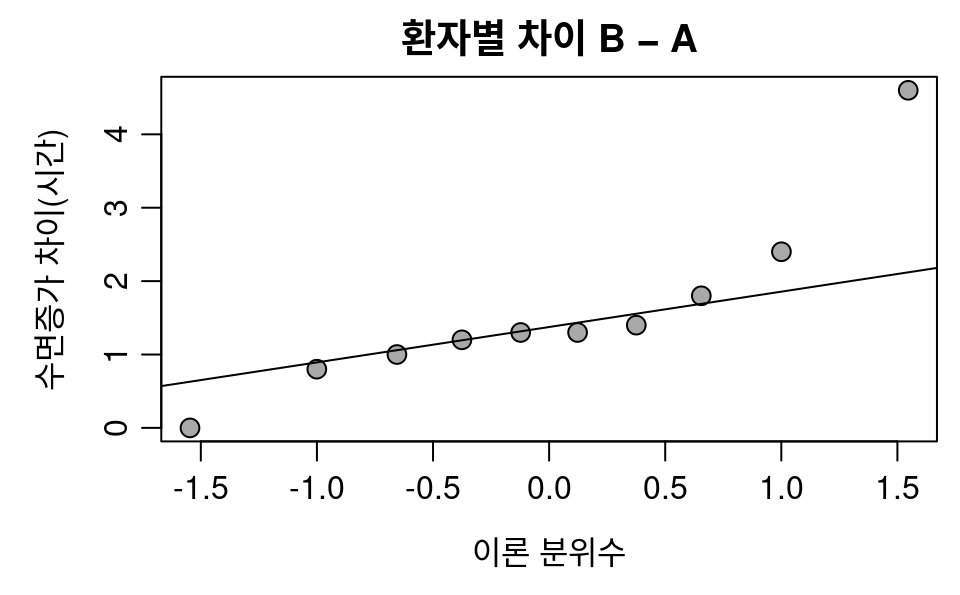
- 대응 검정의 정규성: 약별 두 집단이 아니라 환자별 차이
- 차이의 Shapiro p = 0.033: 기각, P09 의 차이 4.6시간이 직선 위
- 약별 p 0.408, 0.351: 이 점이 보이지 않음, 두 약의 등분산도 가정이 아님
8.3 민감도 확인: 정규분포를 가정하지 않는 방법
같은 차이 10개를 네 방법으로
- 민감도 확인: 가정을 바꾼 방법으로도 결론이 같은지 보기
- Wilcoxon 부호순위 검정
wilcox.test(): 차이의 순위로 검정 - 부호검정
binom.test(): 차이가 0 이 아닌 환자 m 명 가운데 양수인 수를 B(m, 0.5) 와 비교, 여기서는 9명 모두 양수 - P09 를 뺀 t 검정: 큰 차이 한 명의 영향
- 가장 큰 p 가 0.0091: 모두 0.05 보다 작음
결론: 같은 환자 10명에게서 약 B 의 수면증가가 약 A 보다 평균 1.58시간 큼(95% 신뢰구간 0.70–2.46시간, 대응 표본 t = 4.06, 자유도 9, p = 0.0028). 순위 검정, 부호검정, P09 를 뺀 t 검정에서도 결론이 같음
8.4–8.5 AI 가 보지 못한 부분과 연습
| 확인할 사실 | 실제 응답 | 검증 결과와 보완 |
|---|---|---|
| 환자 수와 반복 측정 | P01–P20 으로 모두 다르다고 추정, n_distinct() 확인은 지시 |
전체 파일은 10명, 각 환자가 두 약에 모두 등장 |
| 검정 선택 | 첫 코드는 확인 결과와 관계없이 Welch 실행, 설명으로 대응 검정 안내 | 확인 출력에 따라 대응 대안을 골라야 함 |
| 짝의 기준 | pivot_wider() 로 환자번호를 키로 |
행 섞기 대조 통과, 위치 짝짓기 오류는 없음 |
| 대응 검정 문법 | 두 벡터에 paired = TRUE |
formula 와 paired 를 함께 쓴 오류는 없음 |
| 정규성 확인 대상 | 약별 Shapiro, 대응 대안에는 가정 확인 없음 | 환자별 차이로: p = 0.033 기각, 민감도 확인에서 결론 같음 |
| Shapiro 결과의 해석 | “p > 0.05이면 정규성을 크게 의심하지 않아도 된다” | 작은 표본의 비기각은 정규분포의 확인이 아님(2.6) |
| 결론의 표현 | 단위, 차이, 신뢰구간 보고를 안내, 비유의를 같음의 증명으로 읽지 말라고 함 | 안내는 유지, 보고 예문의 Welch 는 대응 검정으로 |
AI 는 붙여 넣은 5줄만 봄: 자료 구조는 앞 몇 줄이 아니라 count(환자번호) 로 확인하고, 확인 결과가 검정 선택으로 이어지는지 코드에서 읽기
응답이 잘한 것
- 반복 측정이면 대응 검정이라고 명시
- 수치 대신 빈칸 예문: 결과를 지어내지 않음
8.5 연습
- ‘같은 환자 10명’ 을 더해 다시 요청, 짝 대조
- coagulation 분석 요청을 5절 기준으로 확인
정리
검정 고르기와 분포
- 검정 이름보다 자료 구조: 키를
count()로 세고 1.3 의 표와 대조 - p값은 H₀ 를 가정하고 계산한 확률, 기각하지 못함 ≠ 차이 없음
- 분위수는 type 확인, 직접 만든 함수는 격자로 대조
- Q-Q plot: 끝 점의 방향으로 꼬리를 읽고, 작은 표본은 lineup 과 표본 크기로
두 집단
- 대응은 차이를 한 표본으로, 짝은 키로, 약효는 위약군과 변화량 비교
- 계산의 검증 ≠ 설계의 검증: 세 경로가 같아도 검정의 선택은 따로 확인
셋 이상 집단, 범주, 결과표
- 쌍별 t 검정 대신 F 한 번, 어느 쌍인지는 Tukey, 정규성은 잔차로
- 식은 수치로 대조: SSW 의 \(n_i - 1\), MSB 의 n
- 범주 대 범주는 기대도수, 작으면 Fisher, 상관은 산점도 먼저
- 결과표는 broom, 이름표는 키로, 여러 검정은 다중성과 함께
AI와 함께, 연습문제
- AI 의 확인 코드가 검정 선택으로 이어지는지 읽기
- 대응 검정의 정규성은 차이로, 의심되면 순위 검정과 부호검정으로 민감도 확인
- 읽기 8문항, 쓰기 6문항: 13번 AI 첫 코드 고치기, 14번 본인의 공개 데이터
다음 시간: 분석 절차를 문서로 남기는 재현 가능한 문서: Quarto (15장)